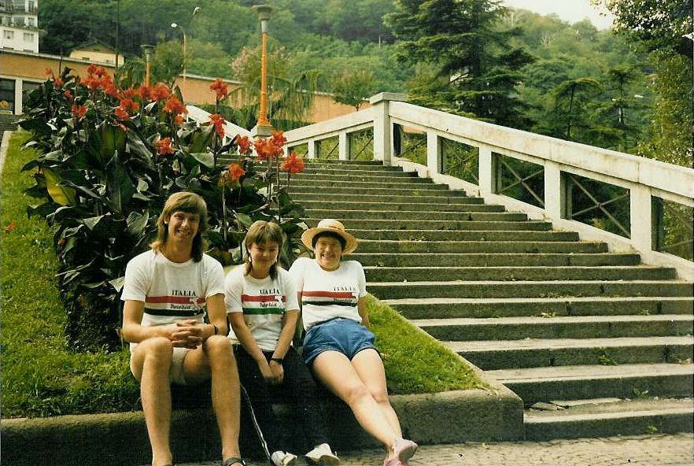

Inter Rail 1986 Day 20
Thursday 11th September 1986
The alarm went off at 5.10am. We all switched into autopilot mode as we got up, packed up, tidied the compartment, got off the train at Milan Central, found our connection and 5 minutes later were on our way out of Milan towards Lake Como. Couldn't admire the scenery because it was still dark.

Arrived at Lake Como at 6.30am Got as far as the railway cafe where life started to return after two cups of cappachino. Thought they were employing sex discrimination as couldn't find an open ladies loo. Eventually had to get the key of the railway cafe's loo.
Headed off into town and ended up sat on the wall on the edge of the lake dossing around. Moved off around the corner to a park bench when the Elsan smell got too much. Jon sat and read Shogun whilst Eli and I sussed out the town. Priced the DIY pedalos and the funnicular we'd seen earlier from the train. Decided restaurant prices were a little steep for us. Spent a while in an outside book store under the cathedral. Lots of famous books, obviously all in Italian for us to identify. There were also Shakespeare and Lewis Carroll books with English on the LHS and Italian on the RHS.
Picked up Jon and got some grub in a Big Burghy Bar! Things got a bit confusing and we ended up with 4 burgers between 3 but nothing got wasted. Had another sit by the lake until the smell got too much and then went up to the grass just below the station where we lay about and read in the sun, changing back into T shirts and shorts.
Our train to Milan was caught after another cup of cappachino. On arrival got our tickets stamped and then sat in Milan station. Absolutely massive. Found out that only one carriage was going all the way to Calais. Having studied the train diagram, we situated ourselves where it should be. Just about got it right. Plonked ourselves in the carriage wihich had only 2 reserved seats. The two who had reserved turned out to be a lad and lass from Cambridge University. They sat in some of the unreserved seats and helped us keep the compartment numbers down to 5.
We shared their pizza and they shared our wine. They had one seat, Eli had the other whilst Jon and I slept wedged under the seats. We kept our travelling companions amused for hours by reciting Monty Python.
Inter Rail 1986 Day 21
Friday 12th September 1986
Woke up in France. Thought we were going through Belgium. At 9.15 am we arrived in Calais Ville. Got out at station and straight on a bus going to Mammouth. No bank in mammouth so had to give a passport to the lady at the reception desk to borrow 10F to get a shopping trolley. Spent a wonderful time deciding which wines to take back plus we bought a melon and a bag into which to put the clothes we'd have to take out of the rucksack to fit the wine in.
Jon had to buy a disposable lighter in order to get change to buy our bus tickets back to the station. Bought the ferry ticket at Calais Ville station and got on a bus with an Evil Knieval driver to the ferry on which we proceeded to consume 2 litres of wine. Just enough time to buy the ticket to Cardiff at Dover Priory and just about made the connection from Victoria to Paddington.
The train we got on turned out to be a non saver ticket train but the guard never reached us so we weren't chucked off or forced to pay for a more expensive ticket. Spent most of the journey chatting to a guy who was an expat who had worked in South Africa for a while. Quite enlightening.
Sat outside the station until 7.30pm when Mum arrived to take me home for a nice cup of tea.